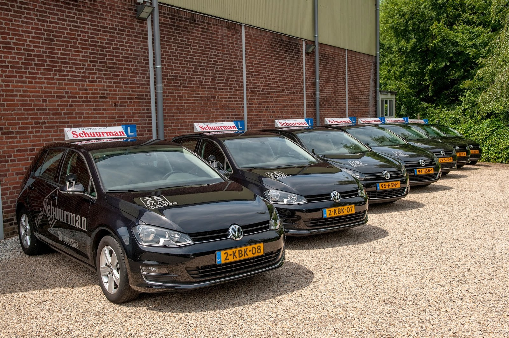
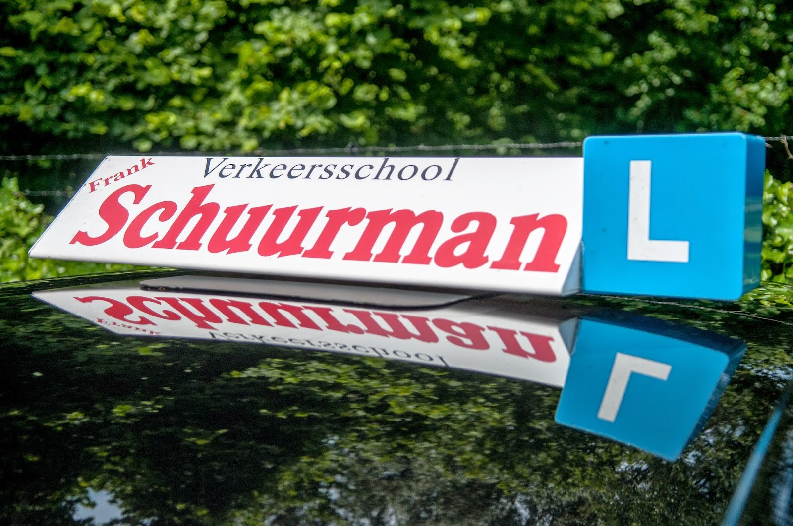
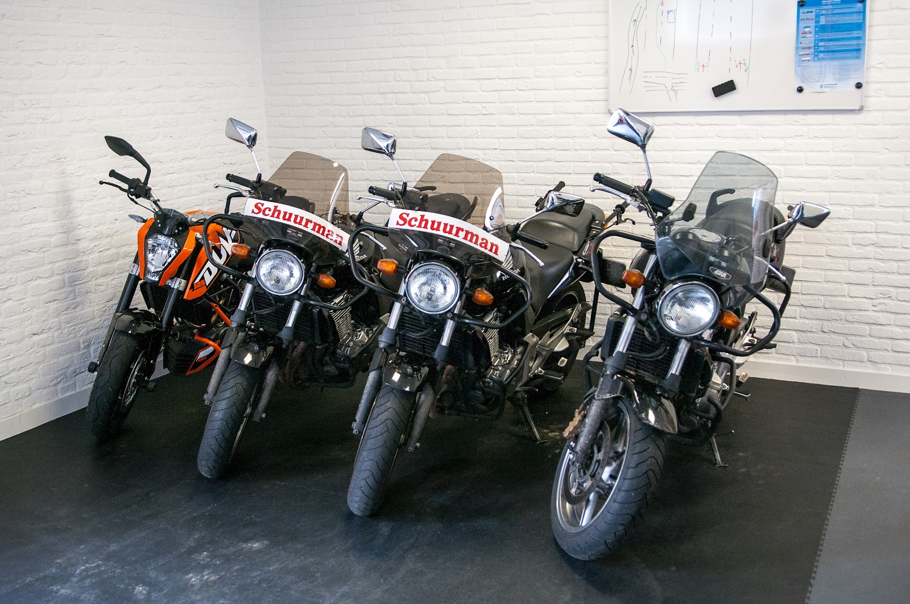
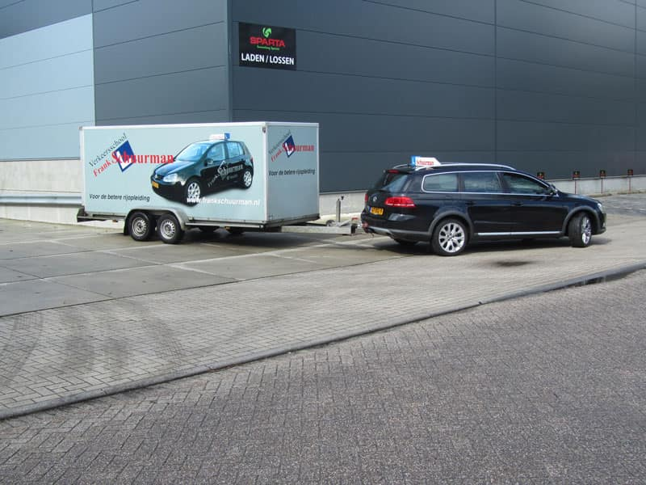
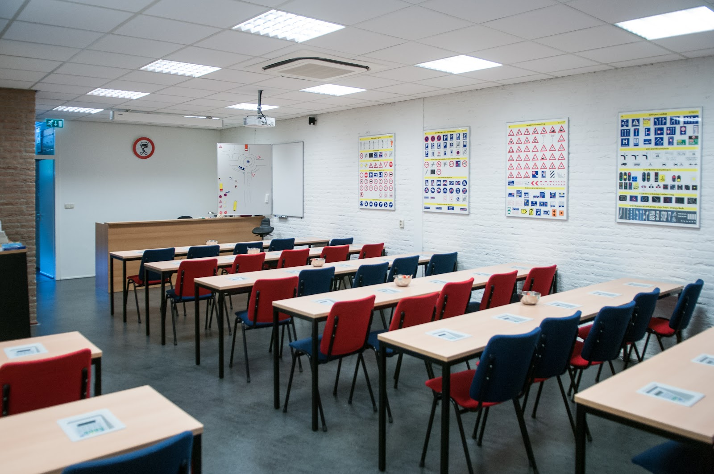
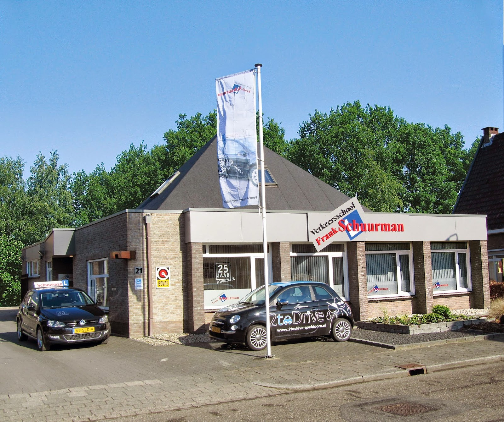

Rijschool in Apeldoorn, sinds 1987
Slagen doe je bij Frank.
Een vaste instructeur die jou kent, lessen op jouw tempo en een goede voorbereiding op het examen. Zodat je de eerste keer slaagt.
4,6 uit 36 Google-reviews

Welk rijbewijs wil je halen?
Auto, motor, brommer of aanhanger: je kunt voor alles bij ons terecht, ook voor de theorie. Kies je rijbewijs en lees precies hoe het werkt en vanaf welke leeftijd.
Liever even overleggen? Bel 055 366 4363, op werkdagen van 08:00 tot 18:00.
Rijbewijs B
Autorijles met een vaste instructeur
We stemmen de lessen af op jou: we bespreken je wensen, spreken samen af hoe vaak je lest en passen het tempo aan op je vorderingen. Omdat je steeds dezelfde instructeur hebt, weet die precies wanneer je klaar bent voor de volgende stap. En voor het examen.
- Beginnen vanaf 16,5 jaar
- Examen vanaf je 17e, daarna tot je 18e rijden met een coach via 2toDrive.
- Eerste les gratis
- Als je de volledige opleiding bij ons volgt. Kennismaken, de lesauto leren kennen en je wensen bespreken.
- Lessen van 50 minuten
- Of een blokuur van twee lessen achter elkaar. Versneld in 8 weken kan in overleg.
- Handgeschakeld of automaat
- In een Volkswagen Golf of Polo. Met rijbewijs B mag je ook meteen brommer en scooter rijden.


Rijbewijs A1, A2 en A
Motorrijles, de uitrusting krijg je van ons
Onze motorinstructeurs zijn KNMV-gediplomeerd (KGI). Je eerste motorles is een privéles, daarna les je met maximaal twee leerlingen. Jas, broek, handschoenen en helm met vizier krijg je van de rijschool. Jij zorgt zelf voor stevige schoenen die je enkels bedekken.
Heb je nog geen autorijbewijs, dan begin je met theorie. Heb je rijbewijs B al, dan kun je meteen met de motorlessen beginnen.
| Rijbewijs | Examen vanaf | Je lest op | |
|---|---|---|---|
| A1 | 18 jaar (lessen vanaf 17) | Lichte motor tot 125 cc en 11 kW | KTM 125 Duke |
| A2 | 20 jaar | Middelzware motor tot 35 kW | Yamaha MT-03 |
| A | 21, 22 of 24 jaar | Alle motoren, zonder beperking | Yamaha MT-07 |
A2 en A kun je rechtstreeks of getrapt halen. Welke route voor jou geldt hangt af van je leeftijd en welk rijbewijs je al hebt. We leggen het je graag uit.
Rijbewijs AM
Brommer of scooter, zo snel mogelijk
Doe je theorie-examen vóór je 16e verjaardag, dan kun je op je verjaardag meteen beginnen met rijlessen. Je instructeur rijdt zelf op een brommer met je mee. Veiligheidshesjes heeft de rijschool.
Handig voor later: wie eerst AM haalt, kent de verkeersregels al en heeft praktijkervaring als de auto of motor aan de beurt is.
- 1 15,5 jaarTheorie-examen doen
- 2 16 jaarPraktijklessen en examen
- AM De weg opBrommer, scooter of snorfiets

Rijbewijs BE, E achter B
Aanhanger of caravan? BE in één dag
Het is een dagopleiding: je krijgt op één dag je rijlessen en doet dezelfde dag je rijexamen. Je leert omgaan met het uitzwenken van de aanhanger, het beperkte zicht, de langere remweg en het grotere formaat van de combinatie.
Heb je BE nodig? Tel het toegestane gewicht (T.M.M.) van auto en aanhanger op.
- 3000 kg auto + 700 kg aanhangerB
- 2000 kg auto + 1400 kg aanhangerB
- 2000 kg auto + 1600 kg aanhangerBE
Samen boven de 3500 kg en een aanhanger zwaarder dan 750 kg? Dan heb je BE nodig. Let ook altijd op hoeveel je auto mag trekken.

Voor de betere rijopleiding
Frank Schuurman begon in 1987 als eenmanszaak. Inmiddels zijn we een van de grootste rijscholen in Apeldoorn. Wat altijd hetzelfde is gebleven:
- Een vaste instructeur die jouw vorderingen persoonlijk bijhoudt.
- Goed opgeleide, gemotiveerde instructeurs, geselecteerd op kwaliteit.
- Al sinds 1987 een hoog slagingspercentage.
- Sportieve maar degelijke lesauto's en lesmotoren.
- Een eigen theorielokaal met modern lesmateriaal, voor auto, motor en brommer.
Wat leerlingen en ouders zeggen
4,6
36 reviews op Google
"Onder de bezielende leiding van Frank mijn BE rijbewijs gehaald. Frank was rustig, vriendelijk en duidelijk, precies wat je wil als rij-instructeur. Dikke aanrader."
"Na een niet zo fijne ervaring met mijn vorige rijschool een aantal jaar geleden had ik een angst ontwikkelt voor het rijden. Samen met mijn instructeur Richard ben ik hier mee aan de slag gegaan. Stapje voor stapje overwon ik mijn angst en voelde ik mij steeds meer comfortabel tijdens het rijden. …"
"Gisteren is mijn zoon geslaagd voor zijn rijbewijs. Overgestapt van een andere rijschool, was Frank zo aardig hem de fijne kneepjes van het autorijden bij te brengen. Frank is een hele goede instructeur en mijn dochter gaat in de toekomst zeker ook haar lessen volgen voor auto en motor bij deze rijschool. …"
"Wat een fijne rijschool, echt heb nu meerdere rijbewijzen hier gehaald met de familie maar de aandacht, de opleiding en ook de humor van de rijschoolhouder is top, dat maakt het halen van je rijbewijs ook gewoon leuk. Ton ook bedankt voor je vakmanschap."
Zullen we een eerste les plannen?
Bel ons, mail ons of kom langs aan de Ovenbouwershoek. Liever eerst meer informatie? Vraag die gerust vrijblijvend aan.
Bel 055 366 4363- info@frankschuurman.nl
- Bereikbaar
- Maandag tot en met vrijdag, 08:00 tot 18:00
Zaterdag en zondag gesloten
